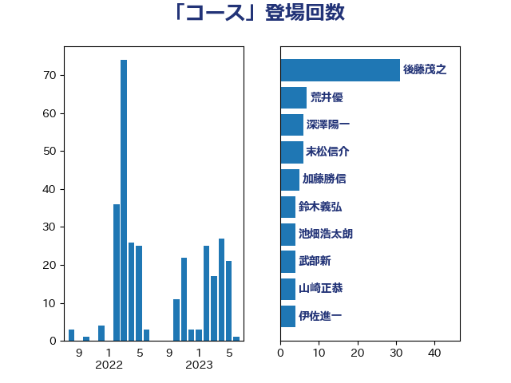

単語「コース」

| 後藤茂之 | 自由民主党 | 31 回 |
| 田村憲久 | 自由民主党 | 8 回 |
| 末松信介 | 自由民主党 | 6 回 |
| 深澤陽一 | 自由民主党 | 6 回 |
| 岸信夫 | 自由民主党 | 5 回 |
| 川田龍平 | 立憲民主党 | 5 回 |
| 西村智奈美 | 立憲民主党 | 5 回 |
| 仁木博文 | 無所属 | 4 回 |
| 本村伸子 | 日本共産党 | 4 回 |
| 武部新 | 自由民主党 | 4 回 |
| 山崎正恭 | 公明党 | 3 回 |
| 平林晃 | 公明党 | 3 回 |
| 竹谷とし子 | 公明党 | 3 回 |
| 舩後靖彦 | れいわ新選組 | 3 回 |
| 西村康稔 | 自由民主党 | 3 回 |
| 野田聖子 | 自由民主党 | 3 回 |
| ながえ孝子 | 無所属 | 2 回 |
| 三原じゅん子 | 自由民主党 | 2 回 |
| 上野通子 | 自由民主党 | 2 回 |
| 下野六太 | 公明党 | 2 回 |
| 伊藤俊輔 | 立憲民主党 | 2 回 |
| 塩村あやか | 立憲民主党 | 2 回 |
| 大島敦 | 立憲民主党 | 2 回 |
| 山下芳生 | 日本共産党 | 2 回 |
| 山添拓 | 日本共産党 | 2 回 |
| 岸田文雄 | 自由民主党 | 2 回 |
| 島村大 | 自由民主党 | 2 回 |
| 新垣邦男 | 立憲民主党 | 2 回 |
| 池畑浩太朗 | 日本維新の会 | 2 回 |
| 田村まみ | 国民民主党 | 2 回 |
| 田畑裕明 | 自由民主党 | 2 回 |
| 石田昌宏 | 自由民主党 | 2 回 |
| 野田佳彦 | 立憲民主党 | 2 回 |
| 音喜多駿 | 日本維新の会 | 2 回 |
| おおつき紅葉 | 立憲民主党 | 1 回 |
| 上川陽子 | 自由民主党 | 1 回 |
| 中曽根康隆 | 自由民主党 | 1 回 |
| 今井絵理子 | 自由民主党 | 1 回 |
| 伊藤孝恵 | 国民民主党 | 1 回 |
| 前原誠司 | 国民民主党 | 1 回 |
| 古屋範子 | 公明党 | 1 回 |
| 古賀篤 | 自由民主党 | 1 回 |
| 吉田統彦 | 立憲民主党 | 1 回 |
| 吉良よし子 | 日本共産党 | 1 回 |
| 國重徹 | 公明党 | 1 回 |
| 坂本哲志 | 自由民主党 | 1 回 |
| 城井崇 | 立憲民主党 | 1 回 |
| 堤かなめ | 立憲民主党 | 1 回 |
| 宮本徹 | 日本共産党 | 1 回 |
| 小沢雅仁 | 立憲民主党 | 1 回 |
| 山本太郎 | れいわ新選組 | 1 回 |
| 山際大志郎 | 自由民主党 | 1 回 |
| 川合孝典 | 国民民主党 | 1 回 |
| 庄子賢一 | 公明党 | 1 回 |
| 斉藤鉄夫 | 公明党 | 1 回 |
| 斎藤アレックス | 国民民主党 | 1 回 |
| 杉本和巳 | 日本維新の会 | 1 回 |
| 東徹 | 日本維新の会 | 1 回 |
| 柿沢未途 | 無所属 | 1 回 |
| 梅谷守 | 立憲民主党 | 1 回 |
| 比嘉奈津美 | 自由民主党 | 1 回 |
| 浜田聡 | NHK党 | 1 回 |
| 浮島智子 | 公明党 | 1 回 |
| 片山大介 | 日本維新の会 | 1 回 |
| 牧山ひろえ | 立憲民主党 | 1 回 |
| 田村智子 | 日本共産党 | 1 回 |
| 石井苗子 | 日本維新の会 | 1 回 |
| 稲富修二 | 立憲民主党 | 1 回 |
| 空本誠喜 | 日本維新の会 | 1 回 |
| 西銘恒三郎 | 自由民主党 | 1 回 |
| 赤羽一嘉 | 公明党 | 1 回 |
| 進藤金日子 | 自由民主党 | 1 回 |
| 金子恭之 | 自由民主党 | 1 回 |
| 鈴木義弘 | 国民民主党 | 1 回 |
| 阿部知子 | 立憲民主党 | 1 回 |
| 階猛 | 立憲民主党 | 1 回 |
| 青山繁晴 | 自由民主党 | 1 回 |
| 高木かおり | 日本維新の会 | 1 回 |
| 高階恵美子 | 自由民主党 | 1 回 |